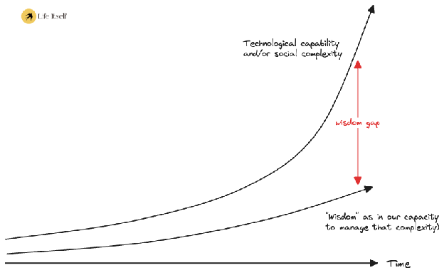
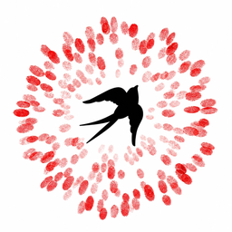

Wisdom and Wanting What's Good
Collective wisdom for a time of crisis and renewal
Wisdom · Part 1Against a backdrop of global crisis, wisdom emerges as a vital capacity for a regenerative future.
Wisdom and Wanting What's Good
Collective wisdom for a time of crisis and renewal
Wisdom · Part 1- Edition
- First edition, October 2026
- Credits
- Figures by the authors. Set in Polyamine, Restora, Bricolage Grotesque and Apfel Grotezk.
- Licence
- Creative Commons Attribution 4.0 (CC BY 4.0)
- Cite as
- Pollock, R. and Bell, R. (2026). Wisdom and Wanting What's Good: Collective wisdom for a time of crisis and renewal. Seeds of Renaissance No. 6. Life Itself Sensemaking Studio.
- Online
- secondrenaissance.net/papers
Contents
- ·iiiSummary
- ·viiPreface
- ·1Introduction
- 17Decision-making the modern way: questions of quantity
- 7(Post-)modernity ♡s measurementModern industrialised societies have come to privilege quantitative knowledge, marginalising values like beauty and goodness which are seen as “subjective”. The resulting crises demand a reintegration of qualitative judgement and broader ways of knowing.
- 10GDP and financial proxies for happinessGovernment fixated on Gross Domestic Product exemplifies modern reduction of value to measurement, neglecting essential aspects of the public good.
- 11Scapegoating money: the rise of extrinsic valuesMoney itself isn’t the problem. But our distorted relationship to it, valuing symbols over substance, is corrosive.
- 213Knowing beyond measurement: wisdom’s intuitive dimension
- 13Extra-rational choosing: hiding in plain sightRestoring wisdom may depend less upon learning something new than upon reviving a dormant human faculty for sensing what truly matters.
- 17Case study: the work of Christopher AlexanderThe ‘timeless way’ of architect Christopher Alexander is a theory of design that embodies decision-making beyond measurement.
- 321Cultivating civic wisdom: experiential factorsWise decision-making is cultivated through lived experience in a collective setting, and attunement to an embodied ‘inner compass’ shaped in part by that experience.
- 424Who’s wise and how do we know? Self-selecting networksSociety’s wisdom is collective and contextual. Peer-selected networks offer a model for empowering the wise, albeit imperfect and vulnerable to corruption.
- ·28Conclusion
- ·30Further reading · Bibliography · Appendices
The wisdom that orients collective action
Addressing the wisdom gap
Amid the decline of modern industrialised society, we are obliged to trace the shape of wisdom in negative space. Manifold crises, the threat of systemic collapse, and a general inability to change direction suggest a profound lack of collective capacity to choose action for the greater good. At the same time, with societal complexity escalating faster than our capacity to manage it, our technologically enabled power to inflict catastrophic harm upon ourselves, each other and our world likewise continues to grow: a disconnect known as ‘the wisdom gap.’7


Seeds of Renaissancesecondrenaissance.net/papers
It’s uncontroversial to associate wisdom with rational understanding: with the capacity to grasp what’s going on in a given context, and apply knowledge and analysis to interpret events and guide action. The complexity of our times plainly overwhelms understanding, and it’s tempting to suggest that this shortfall alone explains our ‘wisdom gap’. Still, most would intuitively agree that there’s more to wisdom than analytical skill.
This essay imagines wisdom as a composite capacity formed of at least three interwoven dimensions. The first, valueception, is a capacity to sense and respond to what is good or worthwhile.9
- 7E.g. Pollock & Mulgan (2020), “Bridging the wisdom gap”.
- 8Diagram illustrates a growing gap but does not depict precise trajectories, which are uncertain. Where the curve suggests a slow, gradual increase in wisdom, in reality wisdom might equally be declining, the gap growing even faster.
- 9Valueception has roots in the philosophy of Max Scheler, who argued that values are not subjective projections but real, non-material features of a meaning-saturated world, apprehended through feeling and intuition rather than constructed by reason.
The second, call it sense-making, is a capacity to understand how things are and how they work, and so to discern skilful ways of moving towards the good. The third is will, in the everyday sense of political will or good will: the capacity, individual and collective, to act on what we've discerned. Each can draw on rational analysis, but each also relies on intuitive, embodied discernment operating beneath or beyond it.
Integrating ways of knowing
Diminishing and even denying intuitive skills like valueception, modern societies have come to prioritise two other processes for directing choice: rationality, understood as logical derivation of outcomes, and empiricism which seeks ‘objective facts’ about the world of things, through material evidence and typically via measurement.
Without setting out to vilify these useful ways of knowing, this essay explores what is lost through modern over-reliance upon them. Taking for granted the already-legitimate forms of rational sensemaking that play a part in wise collective choices, we advocate a rehabilitated respect for ‘wisdom’ as a missing pillar of collective choice-making.14
Countless ancient traditions hold insight into the nature of wisdom and its cultivation, from indigenous cultures to religious traditions and beyond. A wiser future society might recognise the respect due to such traditions, but guard against looking to them for ready-made answers. Wisdom arises in context.
“I don't believe Indigenous knowledges can give us the instructions of how to swim in our world… But they can remind us that it's possible to swim.”Vanessa Andreotti16
- 14Importantly, this enquiry isn’t centred on the empirical field of wisdom research. Intuitive knowledge of the measureless is not fundamentally at odds with the scientific method, only with the current assumptions that shape it.
- 16Andreotti (2024), transcript, TGS episode 125.
Decision-making the modern way
questions of quantity
“The meta-crisis is a profound misunderstanding of the nature of what is valuable… pursuing an abstract definition of value, quantitative, financialised… to the detriment of the actual, living field of embodied, intrinsic value.”
Zak Stein17(Post-)modernity ♡s measurement
In large societies, decision-making (what we cultivate and restrict, award and punish) is co-ordinated by powerful institutions. Built into these institutions are particular value judgements, often arising from a deeper cultural worldview: a set of foundational assumptions about reality, including what counts as valid knowledge.18 Modern industrialised cultures tend to privilege empirical knowledge, based in observation, evidence and measurement, and rational knowledge, based in logical analysis and calculation.
Modernity has staged a heist: the field of legitimate knowledge has been stripped of all that’s good and beautiful, leaving only what can be measured.
Wisdom can be framed as a capacity for choosing what’s good and acting skilfully towards it. This paper asks how modern systems dulled the inner compass that knows value, and how reintegrating intuitive capacities with other ways of knowing might close a potentially deadly ‘wisdom gap’.
Rufus Pollock and Rosie Bell work at the Life Itself Sensemaking Studio.
Renaissance